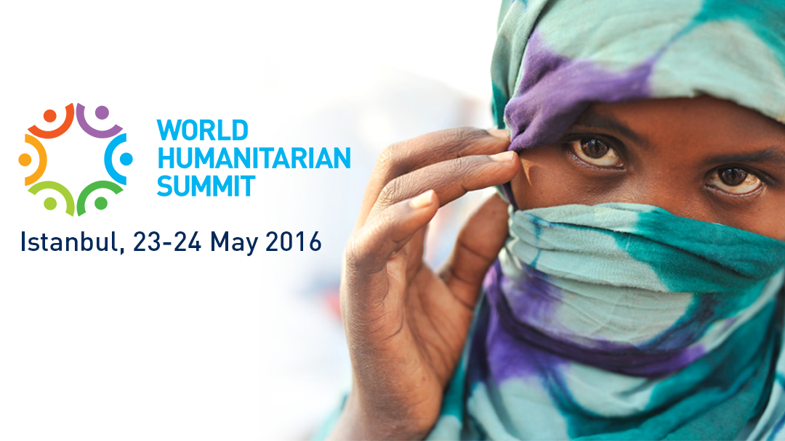
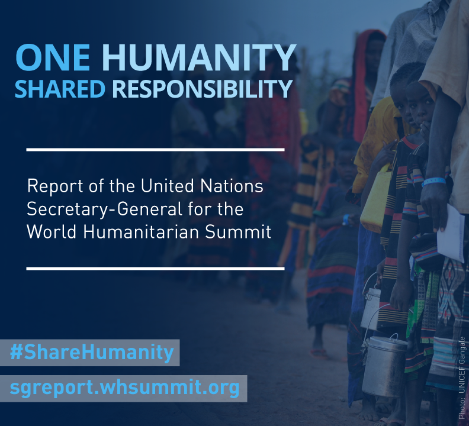

World Humanitarian Summit

What is the World Humanitarian Summit?
The first-ever World Humanitarian Summit, set to take place in Istanbul on 23-24 May 2016, is a global call to action by the United Nations Secretary-General Ban Ki-moon.
The Summit has three main goals:
- To re-inspire and reinvigorate our commitment to humanity and to the universality of humanitarian principles.
- To initiate a set of concrete actions and commitments aimed at enabling countries and communities to better prepare for and respond to crises, and be more resilient to shocks.
- To share innovations and best practices that can help to save lives around the world, put affected people at the center of humanitarian action, and alleviate suffering.
World Humanitarian Summit will bring together governments, humanitarian organizations, people affected by humanitarian crises and new partners including the private sector to propose solutions to our most pressing challenges and set an agenda to keep humanitarian action fit for the future.
Why now?
The world is currently facing humanitarian needs on a massive scale. Human suffering from the impacts of armed conflicts and disasters has reached staggering levels. Nearly 60 million people, half of them children, have been forced from their homes due to conflict and violence. The human and economic cost of disasters caused by natural hazards is also escalating. In the last two decades, 218 million people each year were affected by disasters; at an annual cost to the global economy that now exceeds $300 billion.
The humanitarian system has never reached more people in so many places, but with its current resources and structure, it is no longer able to address the scale and complexity of present, let alone future needs. Decisive, collective action is needed to uphold our shared responsibility to save lives and enable people to live lives of dignity.
Report on World Humanitarian Summit
On 9 February 2016, the UN Secretary-General Mr. Ban Ki-moon launched his report on the World Humanitarian Summit with the title ‘One Humanity: Shared responsibility’in which he calls on world leaders and on all concerned citizens to renew our commitment to humanity and inspire the global leadership and unity needed to prevent and end suffering.
In his report, the Secretary-General asks all stakeholders to accept and act upon five core responsibilities to deliver for humanity. Putting forward an ‘Agenda for Humanity’, he outlines the key actions and strategic shifts necessary to deliver on them.
To download the report please follow the link
Regional Consultations
In 2015, in preparation for the World Humanitarian Summit, five regional consultations, two thematic consultations and a Global Consultation took place.
OCHA Regional Office for Caucasus, Central Asia and Ukraine co-organized the regional consultations for South and Central Asia in July 2015 in Dushanbe, Tajikistan. It was the last of eight regional consultations and attracted a wide range of stakeholders - national governments, humanitarian organizations, affected communities, private sector, media, youth, academia and other partners from16 countries in South and Central Asia.
In 2016, there is much more to do and the WHS Calendar for 2016 with the most important milestones, as well as a short review of 2015 is available here
For additional information, please visit: https://www.worldhumanitariansummit.org/whs_summit